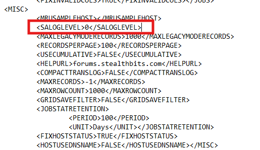

Question
How can you manually enable the debug logging mode in Netwrix Enterprise Auditor?
Answer
Refer to the following steps to manually enable the debug mode in Enterprise Auditor:
-
Locate the
GlobalOptionsconfig.xmlfile in the Enterprise Auditor installation folder. Use the following variable to locate the folder:%sainstalldir% -
In the
GlobalOptionsconfig.xmlfile, change the<LOGLEVEL>value to 0 to enable debug logging. Save the changes. -
Open the Enterprise Auditor console to access the application logs.
Refer to the example of the value in the configuration file that must be changed to 0:
